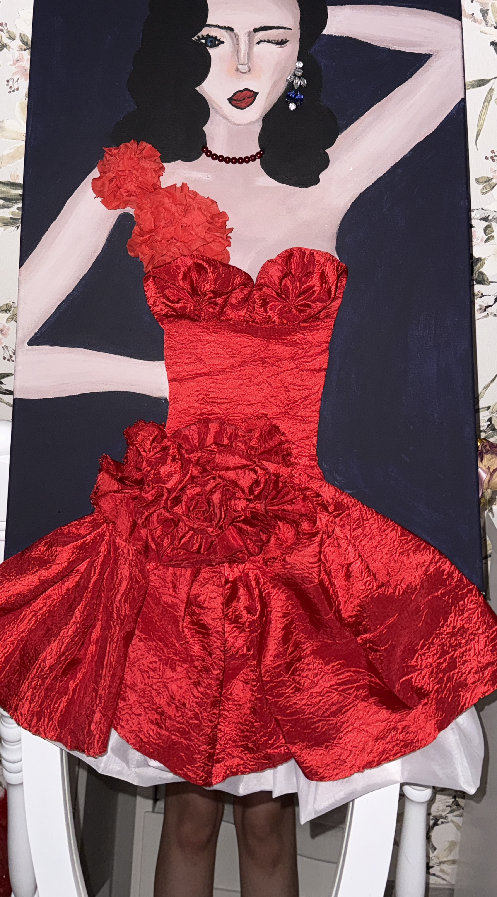
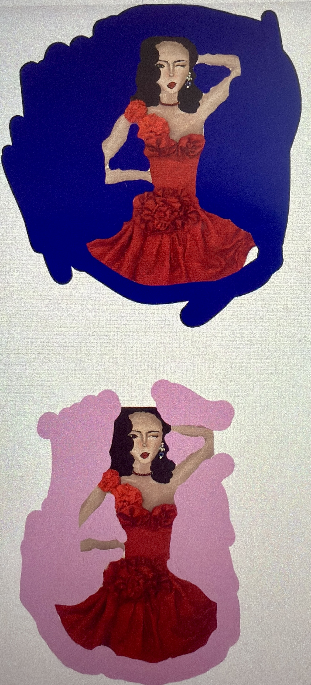
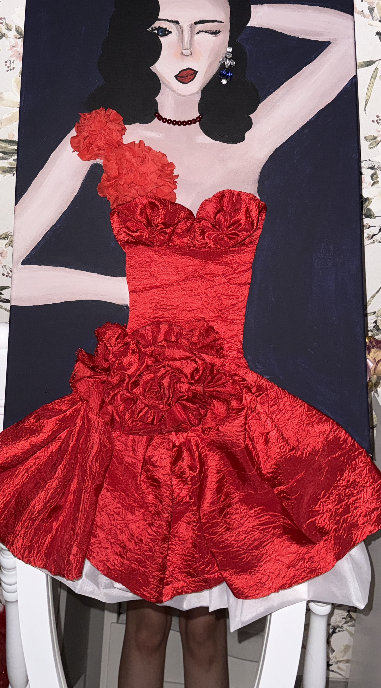
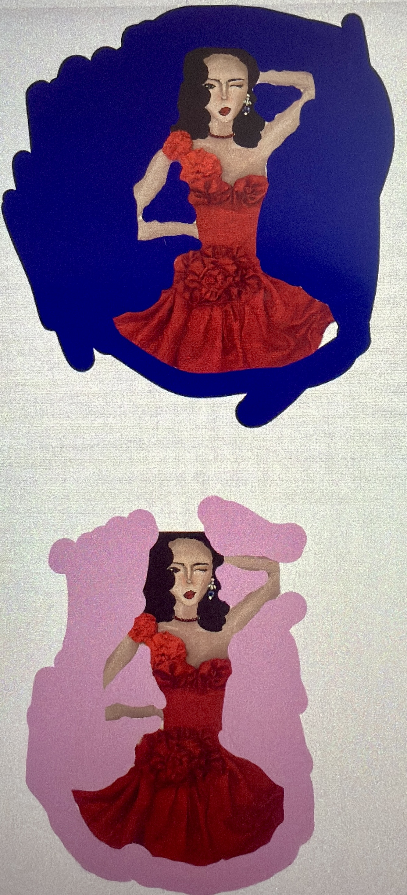

„Wo Entwurf zur Mode wird“
Im Rahmen unserer Klausur ging es darum, ein fantasievolles Bühnenoutfit für eine erfundene Künstlerpersönlichkeit zu entwerfen – passend für einen Auftritt beim imaginären „Festival der Zukunft“.
Meine Idee entstand aus der Begeisterung für die Natur. Ich habe mich besonders von ihrer Vielfalt und Eleganz inspirieren lassen: von der inspirierender Form bis hin zur geheimnisvollen Struktur von Pilzen. All diese Eindrücke flossen in meine Entwürfe ein. Entstanden sind es Designs, das wie gewachsen wirkten – mit fließenden, organischen Linien, die an Pflanzen erinnern.
Dabei war mir wichtig, nicht nur ein schönes Kleid zu gestalten, sondern auch eine klare Botschaft zu vermitteln: Mode darf auffallen und beeindrucken – aber sie soll dabei auch respektvoll mit unserer Umwelt umgehen. So wurde jedes Detail Teil eines größeren Ganzen, das für Eleganz und Fantasie steht.
Gleichzeitig wollte ich mit dem Outfits die Stärke und Einzigartigkeit der Frau zeigen. Die Figuren aus meine Entwürfe sind keine einzigartigen Personen , doch stehen sie für alle, die sich trauen, anders zu sein.

Vielfältiges Konzept
Mein Designprojekt beschäftigt sich mit der Frage, wie Mode in der Zukunft nicht nur schön, sondern auch verantwortungsvoll gestaltet werden kann. Dabei stehen drei Themen im Mittelpunkt: Nachhaltigkeit, Naturverbundenheit und Feminismus.
Die erste Inspiration kam aus der Natur – besonders von der Rose, einem Symbol für Schönheit, Stärke und Verletzlichkeit zugleich. In meinem Design spiegelt sich ihre Form in den geschwungenen Linien und der sanften Struktur wider. Ergänzt wird das Motiv durch das Element Wasser, das für Bewegung, Wandel und Leben steht. Die Kombination aus beidem – Blume und Fluss – zieht sich als roter Faden durch mein gesamtes Kunstwerk.
♻️ Nachhaltigkeit mit Bedeutung
Für mich beginnt Nachhaltigkeit schon beim Material: Ich habe bewusst mit Stoffresten gearbeitet – Materialien, die sonst im Müll gelandet wären. Diese neu zu verwerten, war nicht nur eine gestalterische Herausforderung, sondern auch ein klares Statement gegen Wegwerfmode. Mein Ziel war es, zu zeigen, dass recycelte Materialien ebenso wertvoll sein können wie neue – wenn man mit Kreativität und Sorgfalt arbeitet.
üåø Die Natur als Inspiration
Ich habe versucht, die ästhetische Kraft der Natur nicht nur zu imitieren, sondern sie gestalterisch zu fühlen. In den Details meines Designs findet man Formen, die an Blätter, Blüten oder Wasserläufe erinnern. Dabei geht es nicht nur um die Optik – sondern um das Gefühl, das Natur auslöst: Ruhe, Kraft und Verbindung.
♀️ Feminismus im Design
Ein besonders wichtiger Aspekt war für mich der feministische Gedanke: Mein Kleid steht für die Stärke, Freiheit und Vielfalt weiblicher Identitäten. Die dargestellte Figur ist bewusst offen gehalten – sie soll nicht einem Ideal entsprechen, sondern vielen Interpretationen Raum geben. Das Design feiert die Frau als kreatives, selbstbestimmtes Wesen, das sich nicht in feste Formen zwängen lässt. Fließende Linien statt starrer Silhouetten – für eine Mode, die mitgeht, statt einzuengen.
Gestaltungsprozess
Skizzen & Ideen
Zu Beginn entwickelte ich eine Vielzahl an Skizzen, die ich in der Klausur angefertigt habe , inspiriert von Pflanzenformen, Strukturen und fließenden Wasserlinien. Da ich von Anfang an eine klare gestalterische Richtung vor Augen hatte, begann ich damit, auf Pinterest eine digitale Pinnwand zu erstellen, um meine Ideen weiter zu sammeln und visuell zu strukturieren.
Die Aufregung kam durch die Künstlerin Giselle Lebedenko, deren Videos mich völlig inspirierten: der Idee einer "Dancing Art". Dabei handelt es sich um ein Kunstwerk auf Leinwand, das eine Figur zeigt – von Kopf bis Knie –, die ein eigenes Kleidungsstück präsentiert. Die Besonderheit: Die Künstlerin kann die Leinwand selbst in der Hand halten und durch Bewegungen der Beine den Eindruck eines tanzenden Wesens erzeugen. So sieht man eine beeindruckende Verbindung aus Mode, Bewegung und Performancekunst.
Materialwahl & Ausführung
Alle Materialien bestehen aus Stoffresten und angesammelte Schmuckstücke die, ich zufällig Zuhause hatte. Dazu bemalte ich eine Leinwand mit Acrylfarbe und nutzte Krepppapier um Blumen nachzuahmen. Der finale Design ist eine Kombination aus Malerei und Textildesign handgenäht auf Leinwand.
Galerie

 



Projektzeitplan
Phase 1: Figur mit Acrylfarbe malen
Zuerst musste ich lernen mit Acrylfarbe zu arbeiten. Ich versuchte verschiedene Techniken, um die Figur auf der Leinwand zu malen. Dabei war es wichtig, die Proportionen und Details genau zu treffen. Ich experimentierte mit verschiedenen Pinseln und Maltechniken, um die gewünschte Farbe und Wirkung zu erzielen.
Phase 2: Design der Rosen
Nachdem die Figur fertig war, begann ich mit dem Design der Rosen. Ich entwarf verschiedene Muster und Formen, die ich dann auf die Leinwand übertrug. Dabei achtete ich darauf, dass die Farben harmonisch zur Figur passten und ein stimmiges Gesamtbild ergaben.
Phase 3: Gesamtteil des Kleides entwerfen
Im nächsten Schritt entwarf ich den Gesamtteil des Kleides. Ich kombinierte die gemalten Rosen mit verschiedenen Stoffen und Materialien, um ein einzigartiges Design zu schaffen. Dabei achtete ich darauf, dass die Farben und Muster gut miteinander harmonierten und das Kleid eine fließende, elegante Form erhielt.
Phase 4: Accessoires und Details
Zum Schluss fügte ich dem Kleid verschiedene Accessoires und Details hinzu. Ich nutzte Schmuckstücke und Stoffreste, um dem Design eine besondere Note zu verleihen. Dabei achtete ich darauf, dass die Accessoires das Gesamtbild nicht überladen.